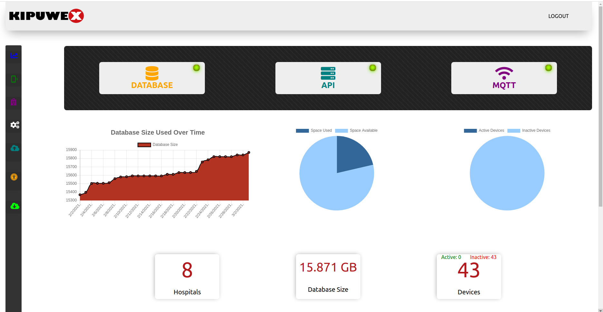
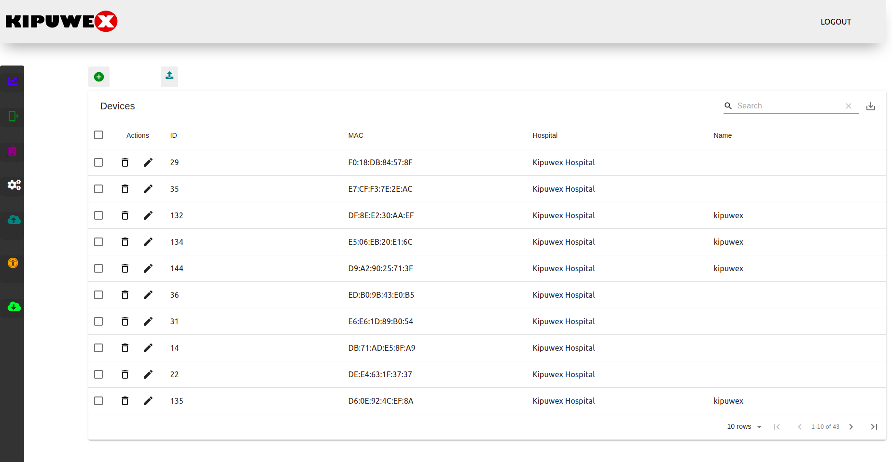
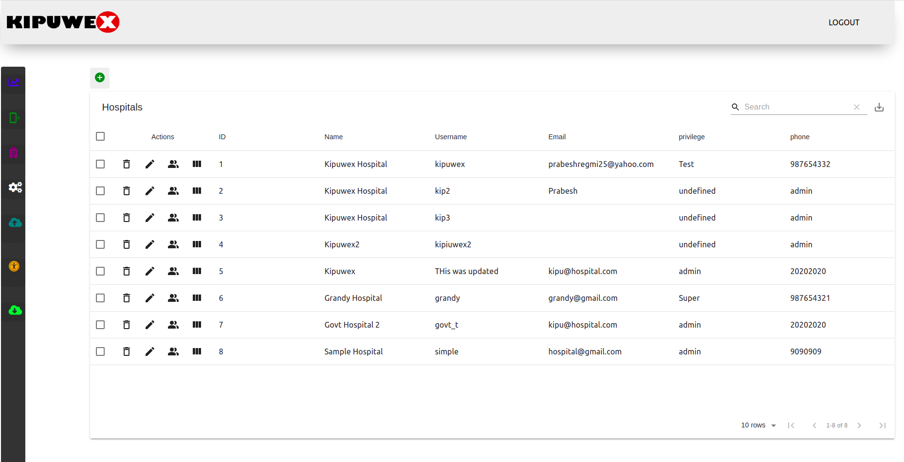
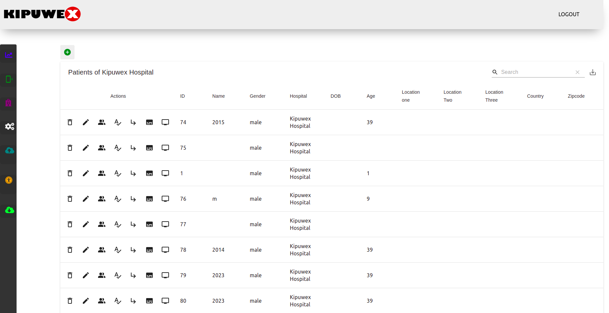
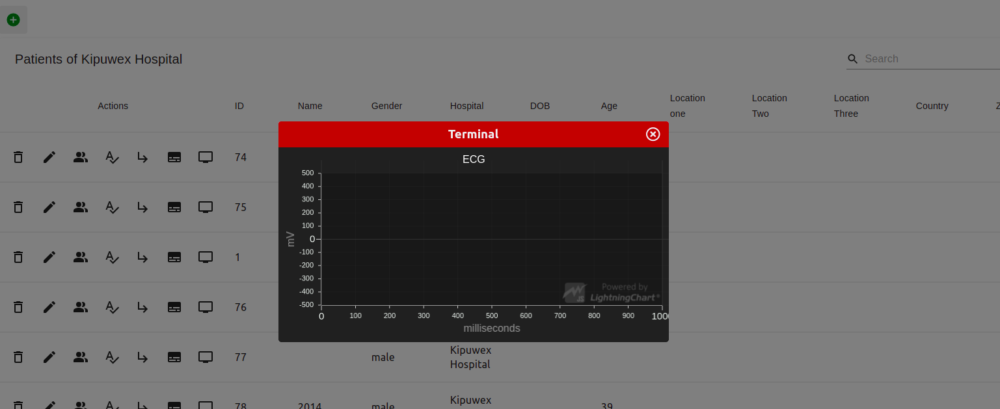

In the dashboard, current condition of the factors like api, database and mqtt is checked. If running fine, green light is shown and red light is shown in case of problems. Graph of database usuage is shown and use of devices is shown in pie chart. Others, are basic stats.
Here, devices can be added, edited or deleted. CSV file can also be uploaded to add devices in bulk amount. Devices can be assinged to patients.


Hospitals can be added, suspended and edited here. And wards, room and patients of the hospital cane be viewed and manipulated here.
Same goes with patients.


Live ECG Graph of patients can be seen. Live data is fetched by subscribing mqtt.